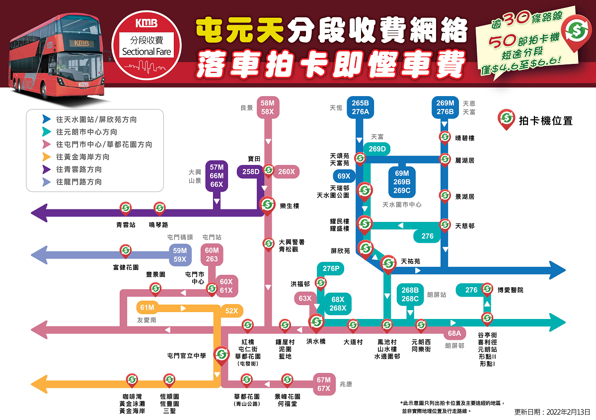
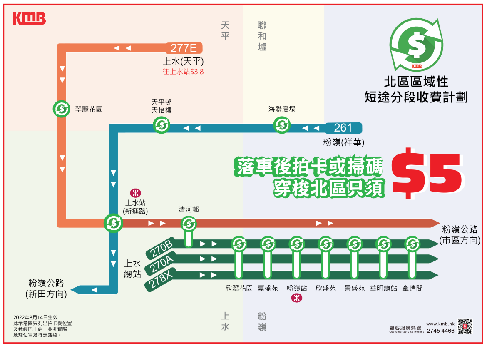
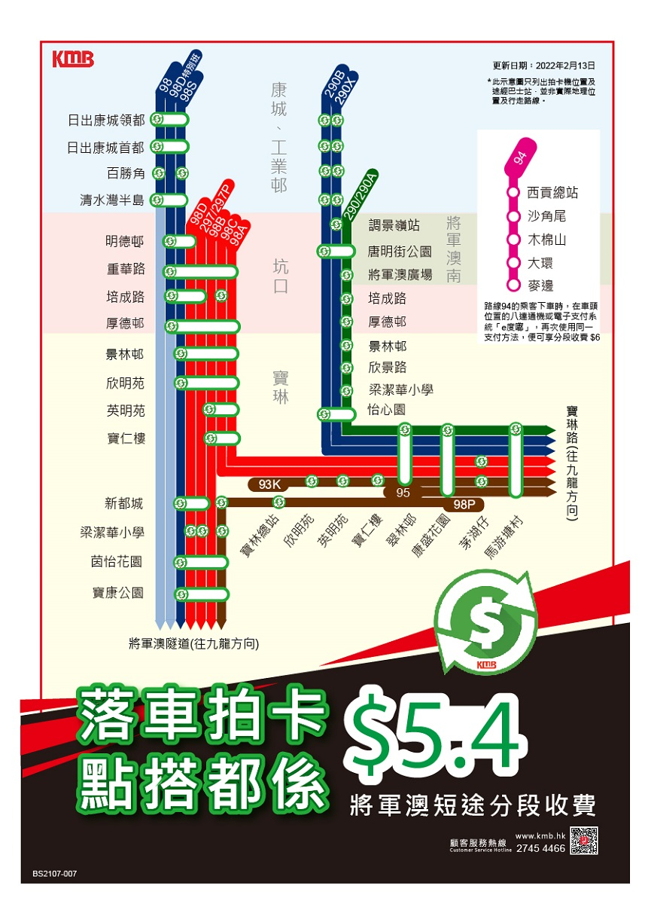

| 天水圍、元朗及屯門短途分段收費計劃 | |||||
|---|---|---|---|---|---|
| 路線 | 起點站 | 成人收費 | 短途分段收費 | 回贈金額 | 沿途裝有車資回贈機的巴士站 （按途經巴士站次序排列） |
| 52X | 屯門市中心 | $14.6 | $5.1 | $9.5 | 屯門官立中學恒順園 恒豐園 三聖總站 |
| 61M | 屯門（海榮路） | $10.4 | $5.3 | ||
| 52X | 屯門市中心 | $14.6 | $6.0 | $8.6 | 咖啡灣 黃金泳灘 香港黃金海岸 嘉和里村 小秀村 大欖涌 |
| 61M | 屯門（海榮路） | $10.4 | $4.4 | ||
| 58M | 良景邨 | $10.8 | $5.1 | $5.7 | 寶田 大興警署 青松觀 紅橋 屯仁街 華都花園 |
| 58X | $14.6 | $9.5 | |||
| 59M | 屯門碼頭 | $9.6 | $4.5 | 富健花園 | |
| 59X | $14.6 | $9.5 | 兆山苑椰景閣 龍門站 | ||
| 60M | 屯門站 | $9.6 | $4.5 | 屯門市中心總站安定邨 兆麟苑 翠寧花園 | |
| 263 | $16.9 | $11.8 | |||
| 60X | 屯門市中心 | $14.6 | $9.5 | ||
| 61X | $15.8 | $10.7 | |||
| 67M | 兆康苑 | $10.8 | $5.7 | 富泰邨 嶺南大學 景峰花園 何福堂書院 華都花園屯門官立中學 | |
| 67X | $14.6 | $9.5 | |||
| 57M | 山景邨 | $10.8 | $5.7 | 建生邨樂生樓鳴琴站 青雲站 | |
| 66M | 大興邨 | $9.6 | $4.5 | ||
| 66X | $14.6 | $9.5 | |||
| 258D | 寶田邨 | $18.8 | $12.1 | ||
| 260X | $17.2 | $7.6 | 大興警署 青松觀 建生邨樂生樓 紅橋 屯仁街 華都花園 | ||
| 68A | 朗屏邨 | $12.6 | $7.2 | $5.4 | 水邊圍邨大道村 洪天路洪福邨 尚城 洪水橋站 鍾屋村站 泥圍 藍地站 紅橋 屯仁街 華都花園 |
| 洪天路洪福邨 | $12.1 | $5.7 | $6.4 | ||
| 虎地 | $11.1 | $5.4 | |||
| 63X | 洪福邨 | $16.2 | $9 | 鍾屋村站 泥圍 藍地站 紅橋 屯仁街 華都花園 | |
| 68X | $16.2 | $5.1 | $11.1 | 洪水橋站 大道村水邊圍邨喜利徑 同樂街 谷亭街 形點II 形點I | |
| 268X | $16.2 | ||||
| 276P | 天水圍站 | $10.5 | $5.4 | 洪元路洪福邨 洪水橋站 大道村水邊圍邨 元朗（西）總站同樂街 谷亭街 形點II 形點I | |
| 276 | 天慈 | $10.5 | 天耀邨耀民樓 天耀邨耀盛樓 屏欣苑鳳池村 元朗（西）總站同樂街 谷亭街 形點II 形點I 博愛醫院 | ||
| 269D | 天富 | $18.5 | $13.4 | 天富苑欣富閣 天頌苑 天瑞邨 天水圍公園 天耀邨耀盛樓 天耀邨耀民樓 天祐苑 水邊圍邨 喜利徑 谷亭街 形點II 形點I | |
| 269D （特別班次） |
天水圍站 | 洪水橋（洪福邨）總站大道村形點II 形點I | |||
| 69 | 元朗（德業街） | $5.2 | $0.1 | 谷亭街同樂街元朗（西）總站 | |
| 268B | 朗屏站 | $20.8 | $15.7 | 山水樓 水邊圍邨 喜利徑 同樂街 形點II 形點I | |
| 268C | $20.8 | 山水樓 水邊圍邨喜利徑 谷亭街 形點II 形點I | |||
| 269B | 天水圍市中心 | $20.8 | 麗湖居天頌苑 天瑞邨 天水圍公園 天耀邨耀盛樓 天耀邨耀民樓 天祐苑 | ||
| 269C | $20.8 | ||||
| 69M | $12.5 | $7.4 | |||
| 天耀邨耀盛樓 | $11.5 | $6.4 | |||
| 69X | 天瑞 | $17.2 | $12.1 | 天水圍公園 天耀邨耀盛樓 天耀邨耀民樓 天祐苑 屏欣苑 | |
| 265B | 天恆邨 | $17.2 | 天富苑欣富閣 天頌苑 麗湖居景湖居 天慈邨 | ||
| 276A | $10.5 | $5.4 | 天富苑欣富閣 天頌苑 天瑞邨 天水圍公園 天耀邨耀盛樓 天耀邨耀民樓 天祐苑 | ||
| 276B | 天富 | $10.5 | 天富苑欣富閣天晴邨晴碧樓麗湖居景湖居 天慈邨 | ||
| 269M | 天恩邨 | $12.5 | $7.4 | ||

| 北區短途分段收費計劃 | |||||
|---|---|---|---|---|---|
| 路線 | 起點站 | 成人收費 | 短途分段收費 | 回贈金額 | 沿途裝有車資回贈機的巴士站 （按途經巴士站次序排列） |
| 277E | 天平邨 | $17.6 | $4.3 | $13.3 | 翠麗花園 上水站 |
| $5.4 | $12.2 | 清河邨 | |||
| 278X | 上水 | $14.7 | $9.3 | 清河邨 欣翠花園 嘉盛苑 粉嶺站 景盛苑 華明總站 欣盛苑 牽晴間 | |
| 270A | $16.9 | $11.5 | |||
| 270B | |||||
| 261 | 祥華 | $15.4 | $10 | 海聯廣場 天平邨天怡樓 上水站 | |

| 將軍澳短途分段收費計劃 | |||||
|---|---|---|---|---|---|
| 路線 | 起點站 | 成人收費 | 短途分段收費 | 回贈金額 | 沿途裝有車資回贈機的巴士站 （按途經巴士站次序排列） |
| 93K | 寶林 | $10.2 | $5.8 | $4.4 | 欣明苑 英明苑 寶仁樓 翠林邨 康盛花園 茅湖仔 馬游塘村 |
| 93P | |||||
| 297 | $11.3 | $5.5 | 欣明苑 景林邨 明德邨 重華路 培成路 厚德邨 | ||
| 95 | 翠林 | $8.4 | $2.6 | 康盛花園 馬游塘村 | |
| 98 | 將軍澳工業邨 | $8.2 | $2.4 | 日出康城領都 日出康城首都 百勝角 清水灣半島 | |
| 98C | 坑口（北）（將軍澳醫院） | $12.1 | $6.3 | 重華路 培成路 厚德邨 景林邨 欣明苑 英明苑 寶仁樓 翠林邨 康盛花園 馬游塘村 | |
| 98A | $7.1 | $1.3 | |||
| 98B | $7.1 | $1.3 | 重華路 培成路 厚德邨 景林邨 欣明苑 英明苑 寶仁樓 茵怡花園 寶康公園 | ||
| 290 | $12.1 | $6.3 | 重華路 培成路 厚德邨 景林邨 欣景路 梁潔華小學 怡心園 翠林邨 康盛花園 馬游塘村 | ||
| 98S | $12.1 | $6.3 | 明德邨 重華路 培成路 厚德邨 景林邨 欣明苑 新都城 梁潔華小學 茵怡花園 寶康公園 | ||
| 297P | $11.3 | $5.5 | |||
| 98D | $11.3 | $5.5 | |||
| 98D（特別班次） | 康城站 | 日出康城領都 日出康城首都 清水灣半島 明德邨 重華路 培成路 厚德邨 | |||
| 98P | 康盛花園 | $11.3 | $5.5 | 翠林邨 寶仁樓 英明苑 欣明苑 欣景路 寶林總站 新都城 梁潔華小學 茵怡花園 寶康公園 | |
| 290A | 將軍澳（彩明） | $12.1 | $6.3 | 唐明街公園 將軍澳廣場 培成路 厚德邨 景林邨 欣景路 梁潔華小學 怡心園 翠林邨 康盛花園 馬游塘村 | |
| 290X | 康城站 | $12.1 | 日出康城領都 日出康城首都 百勝角 清水灣半島 將軍澳廣場 調景嶺站 唐明街公園 怡心園 翠林邨 康盛花園 馬游塘村 |
||